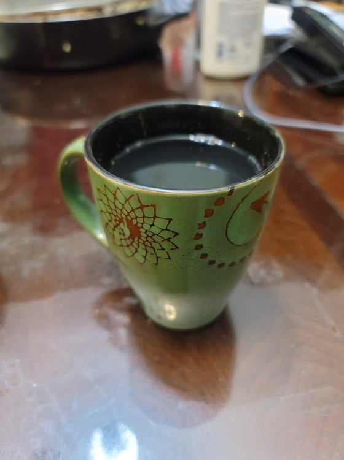

Salabat

Ingredients:
- 4 oz Ginger, thinly sliced
- 6 cups Water
- 1/4 cup Honey
- 1/2 Calamansi or Lemon, or to taste
Instructions:
- Place the ginger, water, and honey into a pot. Bring to a boil and then reduce to a simmer. Cover and let simmer for 10-15 minutes.
- Add in calamansi to taste. Serve hot.